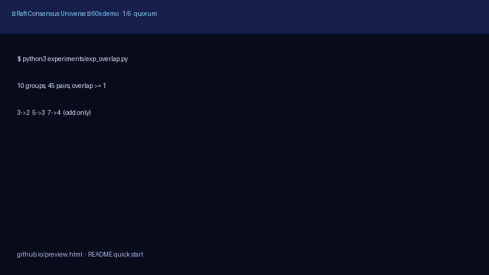
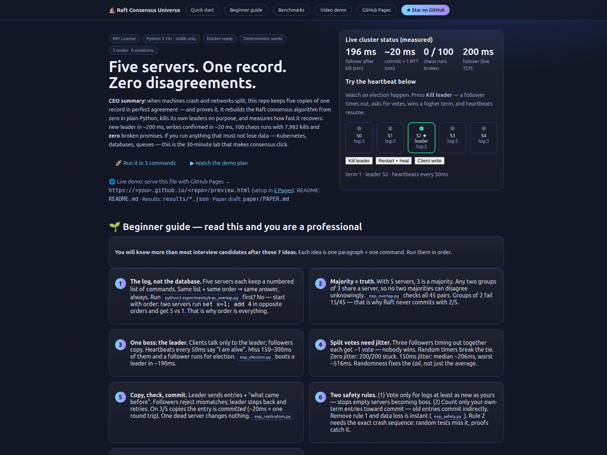
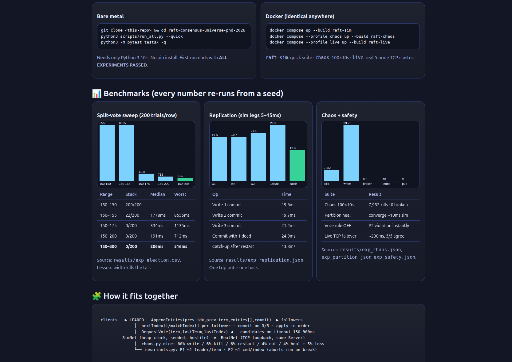

CEO summary: when machines crash and networks split, this repo keeps five copies of one record in perfect agreement — and proves it. It rebuilds the Raft consensus algorithm from zero in plain Python, kills its own leaders on purpose, and measures how fast it recovers: new leader in ~200 ms, writes confirmed in ~20 ms, 100 chaos runs with 7,982 kills and zero broken promises. If you run anything that must not lose data — Kubernetes, databases, queues — this is the 30-minute lab that makes consensus click.
🚀 Run it in 3 commands ▶ Watch the demo plan
🌐 Live demo: serve this file with GitHub Pages → https://<you>.github.io/<repo>/preview.html (setup in § Pages). README: README.md · Results: results/*.json · Paper draft: paper/PAPER.md
Watch an election happen. Press Kill leader — a follower times out, asks for votes, wins a higher term, and heartbeats resume.
term 1 · leader S2 · heartbeats every 50ms
You will know more than most interview candidates after these 7 ideas. Each idea is one paragraph + one command. Run them in order.
set x=1; add 4 in opposite orders and get 5 vs 1. That is why order is everything.git clone <this-repo> && cd raft-consensus-universe-phd-2026 python3 scripts/run_all.py --quick python3 -m pytest tests/ -q
Needs only Python 3.10+. No pip install. First run ends with ALL EXPERIMENTS PASSED.
docker compose up --build raft-sim docker compose --profile chaos up --build raft-chaos docker compose --profile live up --build raft-live
raft-sim: quick suite · chaos: 100×10s · live: real 5-node TCP cluster.
| Range | Stuck | Median | Worst |
|---|---|---|---|
| 150–150 | 200/200 | — | — |
| 150–155 | 22/200 | 1778ms | 8555ms |
| 150–175 | 0/200 | 334ms | 1135ms |
| 150–200 | 0/200 | 191ms | 712ms |
| 150–300 | 0/200 | 206ms | 516ms |
Source: results/exp_election.csv. Lesson: width kills the tail.
| Op | Time |
|---|---|
| Write 1 commit | 19.6ms |
| Write 2 commit | 19.7ms |
| Write 3 commit | 21.4ms |
| Commit with 1 dead | 24.9ms |
| Catch-up after restart | 13.8ms |
Source: results/exp_replication.json. One trip out + one back.
| Suite | Result |
|---|---|
| Chaos 100×10s | 7,982 kills · 0 broken |
| Partition heal | converge ~10ms sim |
| Vote rule OFF | P2 violation instantly |
| Live TCP failover | ~200ms, 5/5 agree |
Sources: results/exp_chaos.json, exp_partition.json, exp_safety.json.
clients ──▶ LEADER ──AppendEntries(prev_idx,prev_term,entries[],commit)──▶ followers
│ nextIndex[]/matchIndex[] per follower · commit on 3/5 · apply in order
│ RequestVote(term,lastTerm,lastIndex) ◀── candidates on timeout 150–300ms
SimNet (heap clock, seeded, hostile) ⇄ RealNet (TCP loopback, same Server)
│ chaos.py dice: 80% write / 6% kill / 6% restart / 4% cut / 4% heal + 5% loss
└── invariants.py: P1 ≤1 leader/term · P2 ≤1 cmd/index (aborts run on break)
Files: src/raft/server.py (the algorithm) · net_sim.py · net_real.py · chaos.py · cluster.py · store.py. Experiments: experiments/exp_*.py → results/*.json.
If docs/demo.mp4 is not committed yet, record it (one-time, 2 min):
bash docs/demo.sh play asciinema rec docs/demo.cast --command "bash docs/demo.sh play" agg docs/demo.cast docs/demo.gif agg docs/demo.cast docs/demo.mp4 --format mp4
Commit docs/demo.gif and it shows here + in the README. Until then, this animated panel replays the five demo steps.



Learn consensus in an afternoon: run the beginner guide, break the vote rule, watch P2 fire. Interview-ready: explain terms, quorums, commit rules with measured numbers.
See why etcd/Consul need 3 or 5 nodes, what a partition does to your writes, and why a minority must stall. Copy the retry + redirect pattern for your own leader.
Rehearse kill-leader drills: expected failover ~200ms sim / ~240ms live. Tune election timeouts with the sweep table, not guesses.
Seven falsifiable patterns (H1–H7) with seeds + artefacts. Extend to snapshots (§7), membership (§6), pre-vote, or adaptive timeouts.
Reuse chaos.py dice + P1/P2 alarms as a template for your own state machine. Ablation mode proves the harness can fail.
Answer: “What happens when 2 of 5 die?” “Why random timeouts?” “Can two leaders coexist?” — with demos, not hand-waving.
No. Python 3.10+ only. Docker optional for identical reruns.
Why 5 servers, not 3 or 7?3 tolerates 1, 5 tolerates 2, 7 tolerates 3. Even sizes waste a server (4 needs 3 — same as 3). Odd sizes only.
Can two leaders exist at once?Yes, briefly, across terms during partitions. Only a majority can commit, so safety holds. The demo shows it.
With 2/5 alive, that is correct. A minority cannot tell death from partition, so it stalls rather than risk split-brain.
preview.html shows no GIF/video?Record once: bash docs/demo.sh play → asciinema → agg. Commit docs/demo.{cast,gif,mp4}.
See § Pages: Settings → Pages → Deploy from branch (main, /root) → open .../preview.html.
preview.html at the repo root, push to main.main, folder: / (root). Save.https://<you>.github.io/<repo>/preview.html.Full checklist: docs/PAGES.md. This file is static (inline CSS/JS only) so branch deployment just works.
README (full): README.md · Paper draft: paper/PAPER.md · Hidden patterns H1–H7: analysis/HIDDEN_PATTERNS.md · Results: results/*.json · Contributing: CONTRIBUTING.md · License: MIT.